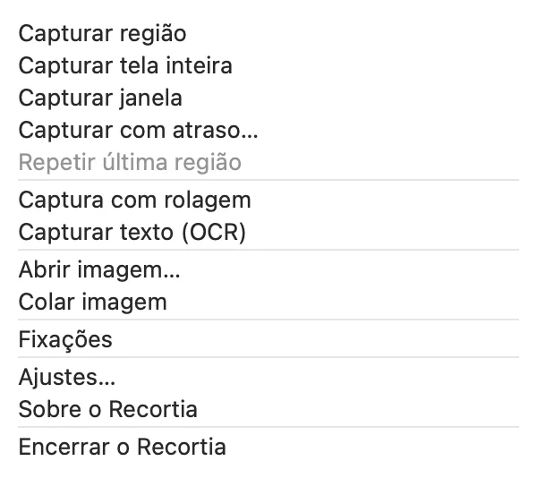
Capture do seu jeito
Região, janela ou tela inteira, com atraso ou repetindo a última região. Os atalhos padrão são os do macOS: ⇧⌘3, ⇧⌘4 e ⇧⌘5.
Capture, anote, oculte e compartilhe pela barra de menus. Tudo no seu Mac, sem conta e sem upload.
Desfoque e pixelização são apenas estéticos: o texto pode continuar recuperável, e o próprio Recortia marca os dois como não seguros. A tarja substitui os pixels cobertos por uma cor opaca em toda cópia, arquivo salvo, arrasto e fixação.
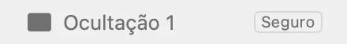
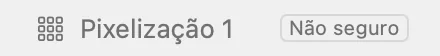
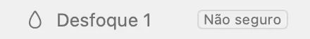
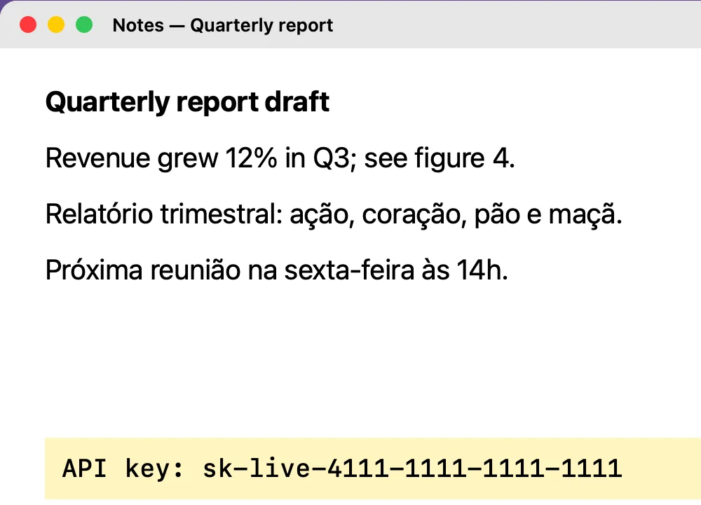
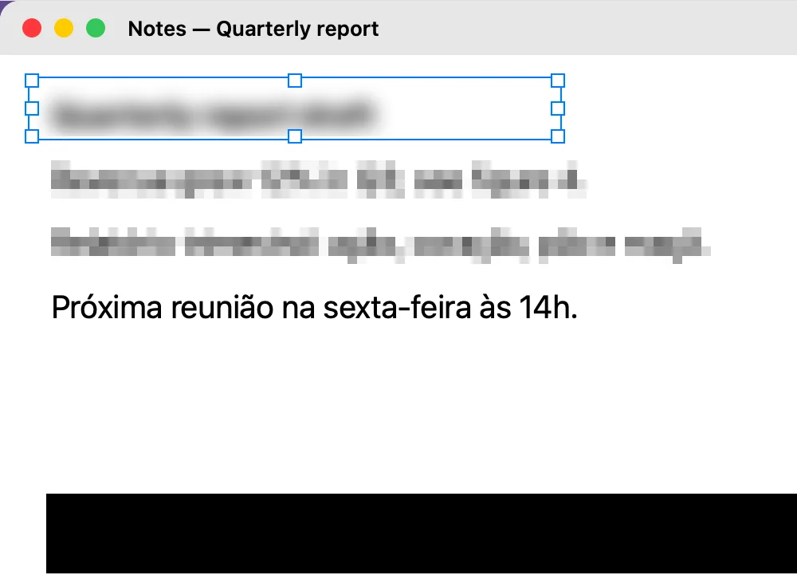

Região, janela ou tela inteira, com atraso ou repetindo a última região. Os atalhos padrão são os do macOS: ⇧⌘3, ⇧⌘4 e ⇧⌘5.
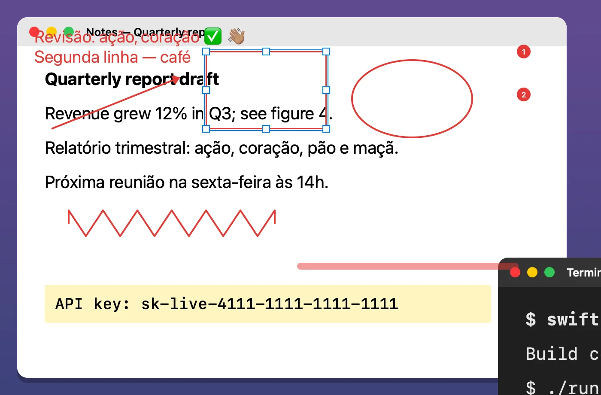
Texto, setas, retângulos, elipses, traço livre, marca-texto e passos numerados, com desfazer agrupado.
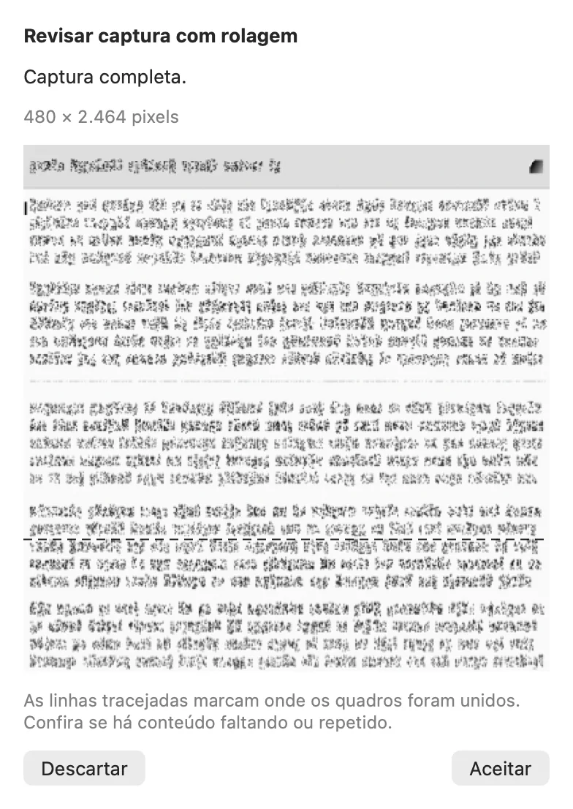
Manual por padrão. Quando a costura fica ambígua, ela pausa em vez de juntar errado.
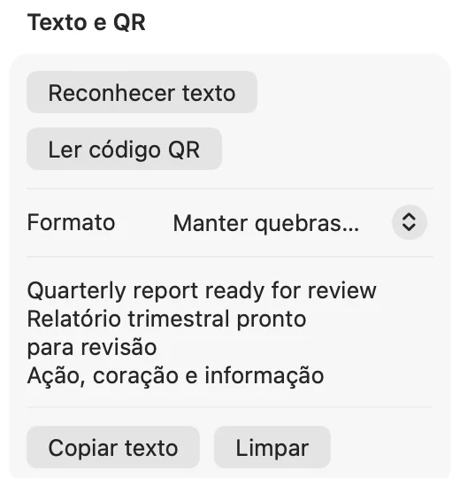
Reconhecimento de texto em português e inglês com o Vision. Links de QR code só abrem quando você clica.
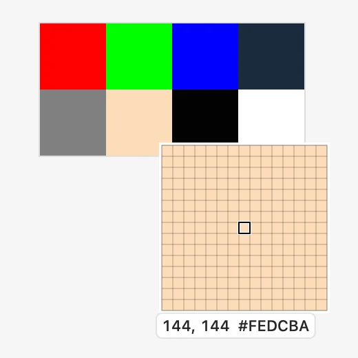
Lupa sem suavização, régua e conta-gotas sRGB em HEX e RGB.
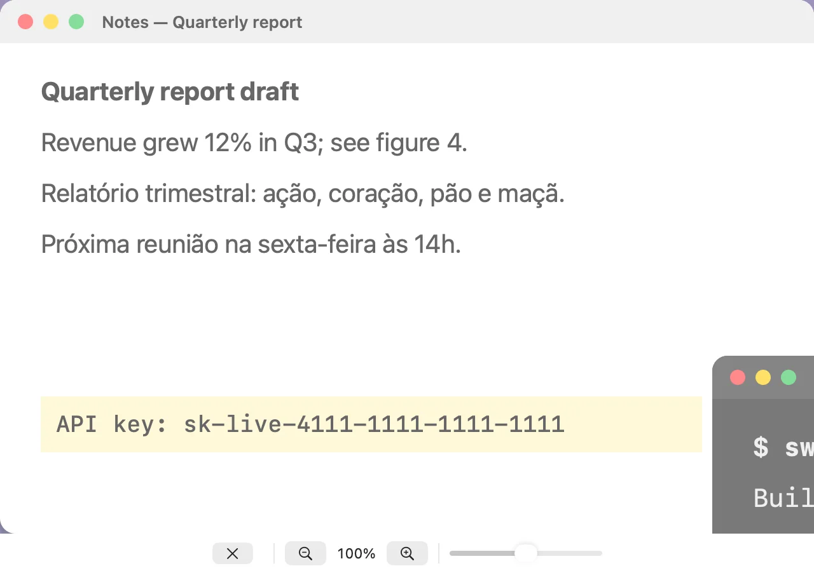
Até cinco referências flutuantes, com opacidade e zoom ajustáveis.
O Recortia não fala com servidor nenhum. Não há conta, telemetria nem nuvem.
Nada é salvo ou copiado até você escolher Copiar, Salvar ou arrastar a imagem.
Cada imagem é codificada de novo, sem EXIF, GPS, blocos de texto nem camadas ocultas.
Gravação de Tela na primeira captura. Acessibilidade só se você ligar a rolagem automática.
A ocultação protege a imagem que você exporta. Ela não alcança cópias exportadas antes nem o histórico de área de transferência de outros apps.
brew install --cask mneves75/tap/recortia
Ou baixe o DMG notarizado. Requer macOS 15 ou posterior em Apple Silicon.
Para usar ⇧⌘3, ⇧⌘4 e ⇧⌘5 no Recortia, desative os atalhos do macOS em Ajustes do Sistema › Teclado › Atalhos de Teclado › Capturas de Tela. O Recortia nunca muda esses atalhos por conta própria.
Versão beta 0.9.0. Gratuito e de código aberto sob a licença MIT.